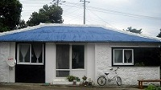
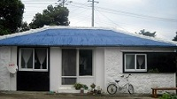

이용안내
#요안도라 올레로 들어서면
입실은 오후 3시 퇴실은 오전 11시입니다.
이곳은 관광지가 아닌, 귤농사를 짓는 중산간 마을입니다.
바베큐, 야외식사 등 바깥채, 외부 앞뜰에서의 활동은 밤 11시 이전까지 마쳐주셔야합니다.
바깥채 내부의 소등은 자유롭게 하시되,
자정 이후로 음주나 소란스러운 대화를 자제해 주시면 고맙겠습니다.
우도, 성산일출봉, 섭지코지, 김영갑갤러리, 용눈이 오름 등
주변 관광지와 한라산 동쪽 등산로로 오가실 경우
요안도라에서 콜택시를 이용하실 수 있습니다.
요안도라에서 콜택시를 이용하실 수 있습니다.
요안도라는, 농사하시는 마을 삼준들의 생활 환경과 제주의 자연환경을 존중합니다.

 
